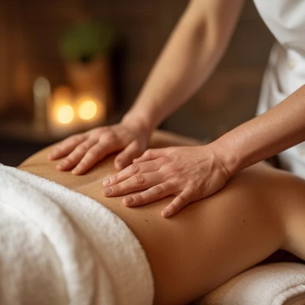

Body massages · Poznań
A therapeutic massage - we call it a "health massage" - is targeted work with tension and pain, supporting the spine, neck and overloaded areas. For a body that needs real help rather than just relaxation.

What it is
We start a therapeutic massage with a longer conversation than usual: where it hurts, since when, what makes it worse and what brings relief. Only then does the therapist choose the techniques - slower and more precise than in a relaxing massage, focused on specific areas instead of the whole body equally.
We work on the spine, neck, shoulders and hips - the places most often overloaded by desk work and repetitive effort. The pressure is firmer, but always within your comfort zone, and we adjust it as we go.

Benefits
Targeted work on the areas overloaded by desk work and driving.
For tension that keeps coming back to the same place and does not ease with ordinary relaxation.
Support for the range of movement in the shoulders, hips and neck.
Recovery after training or a long day on your feet, when a relaxing massage is not enough.
How the session works
We ask about your symptoms, daily routine and past injuries - in more detail than for a relaxing massage.
We agree which areas we work on, how firmly, and what to avoid that day.
Slower, precise work on the chosen areas, adjusting the pressure as we go.
We suggest what to do between visits and when it makes sense to come back.
Duration and price
For one specific complaint, a shorter option is enough. If several areas need work, book more time - otherwise the work will only scratch the surface.
Contraindications
A therapeutic massage does not replace a diagnosis. If the pain radiates into an arm or leg, comes with numbness or started after an injury, see a doctor or physiotherapist first, then come back to us with their recommendations.
FAQ
We do the relaxing massage at an even, calm rhythm over the whole body. The therapeutic massage is targeted - it focuses on a specific tension or pain, works slower and firmer, and costs 20–40 zł more for the same time.
You may feel it more strongly than a relaxing massage, but you should not have to grit your teeth. If you are holding your breath, it is too firm - tell us straight away and we will change the pressure.
For fresh tension, one or two are often enough. For a complaint that has lasted for months, it is more realistic to plan a series of 4–6 sessions every 1–2 weeks.
No. A therapeutic massage complements physiotherapy well, but it does not replace it or make a diagnosis. With radiating pain, numbness or after an injury, start with a specialist.
Where it hurts and since when, what makes it worse, whether there was an injury, and what your doctor or physiotherapist recommended, if you have seen one.
Book online · We speak English
Message us on WhatsApp in English, call, or use the booking form - we will confirm your time.
Contact · Booking · We speak English
We use necessary cookies to make the site work. With your consent we would also like to use Google Analytics to see which pages are useful. You can change your choice at any time. Details in our privacy policy (in Polish).
Needed for the site to work and to remember your choice. They cannot be switched off.
Google Analytics - aggregated visit statistics. Off by default.